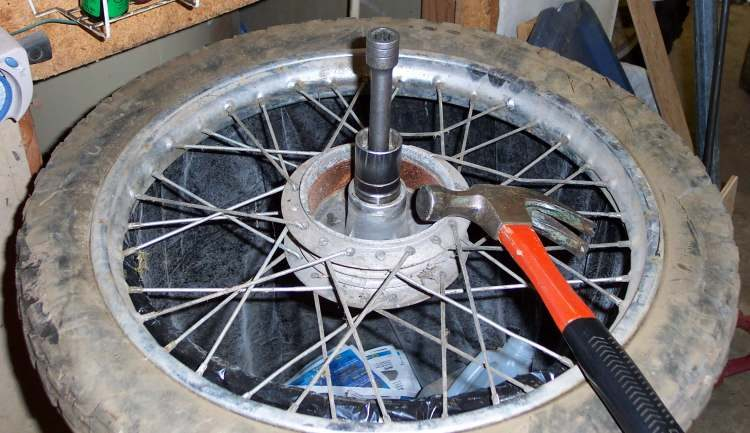
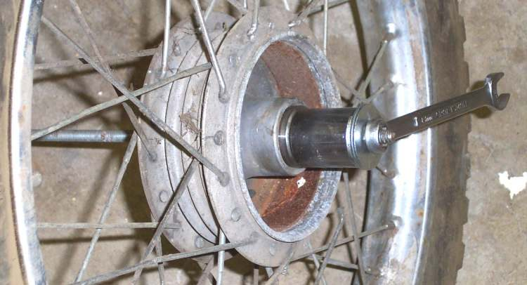

Wheel bearings are pressed tightly into the hub. Removing them without a puller and fitting them without the right driver damages the new bearing or the hub, even if it looks fine. This page is an assessment and hand-off: what to confirm first, what the workshop should do and what to ask for.
Safety
- A bearing that fails at speed can lock or let the wheel tilt. Stop riding a wheel with clear side play.
- Bearings can burst when pressed. Workshops should wear a face shield.
Check first (at home)
- Confirm the fault with Check wheel bearings. Rule out a loose axle, brake drag and swingarm or steering play.
- Read the number on the old bearing seal if you can see it, so the shop fits the same size and seal type. K-Light 125: front 6202-2RS, rear 6303-2RS.
What the workshop should do
- Remove the wheel and keep spacers and the speedo drive in order.
- Lever out the hub oil seals with a cloth under the lever to protect the rim and hub.
- Remove the bearings with a puller, or drive them out through the hub with the centre spacer pushed aside.
- Clean the hub bore and check it for scoring or a loose fit. A bearing that spun in the hub needs a hub repair or a new hub.
- Always fit new bearings. Drive them in only on the outer race, with a driver the same size as the outer race. Pressing on the inner race damages the balls.
- Fit the centre spacer between the bearings. A missing spacer lets the axle squeeze the inner races and the wheel drags.
- Fit new seals with grease on the lips. On the front, grease the speedo drive and make sure its tangs sit in the hub slots.
- Refit the wheel, tighten the axle to the bike's value, spin the wheel, check the brake.
What to ask for
- Both bearings in the hub replaced, not only the noisy one.
- New seals.
- The old bearings, so you can feel the roughness.
- On the rear, ask them to check the cush drive rubbers and the sprocket carrier bearing while the wheel is out (Check the cush drive rubbers).
Do not attempt at home
- Hammering a bearing in on its inner race or with a socket that touches the balls or seals.
- Heating an alloy hub with a flame.
- Reusing bearings that were removed with a puller.
Reference values (K-Light 125)
| Item | Value | Source |
|---|---|---|
| Front bearing | 6202-2RS | K-Light 125 manual, PDF p. 130 |
| Rear bearing | 6303-2RS | K-Light 125 manual, PDF p. 159 |